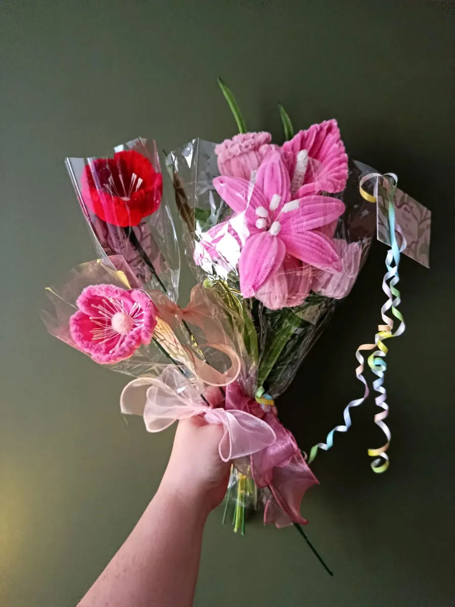

Bouquets · fait main
Petit bouquet à offrir
48 € 6 fleurs × 8 €
Fait main dans les Ardennes, emballé avec soin, avec sa carte de vœux offerte.
La création
Un lys rose, une rose rouge et un gerbera, dans leur pochette transparente fermée d’un nœud.
Ce bouquet compte 6 fleurs, à 8 € la fleur ; le feuillage est offert.
Ce qui est compris
- Façonné à la main, à la commande, dans mon atelier de Signy-l’Abbaye.
- Emballé dans une pochette transparente fermée d’un nœud.
- Une carte de vœux offerte, avec le message de votre choix.
Le langage des fleurs
Dans le langage des fleurs, la rose parle d’amour sous toutes ses formes : la rouge dit la passion, la rose la tendresse, la blanche un amour sincère. Les roses bleues, qui n’existent pas dans la nature, évoquent le rêve et l’impossible : en fil chenille, tout devient possible.
Commander
- Ouvrez cette création sur le site et ajoutez-la à votre sélection.
- Écrivez le message de votre carte de vœux, offerte.
- Envoyez votre demande : je vous confirme la date. Retrait gratuit à l’atelier de Signy-l’Abbaye, ou livraison à 5 € jusqu’à 15 km et 10 € jusqu’à 25 km.